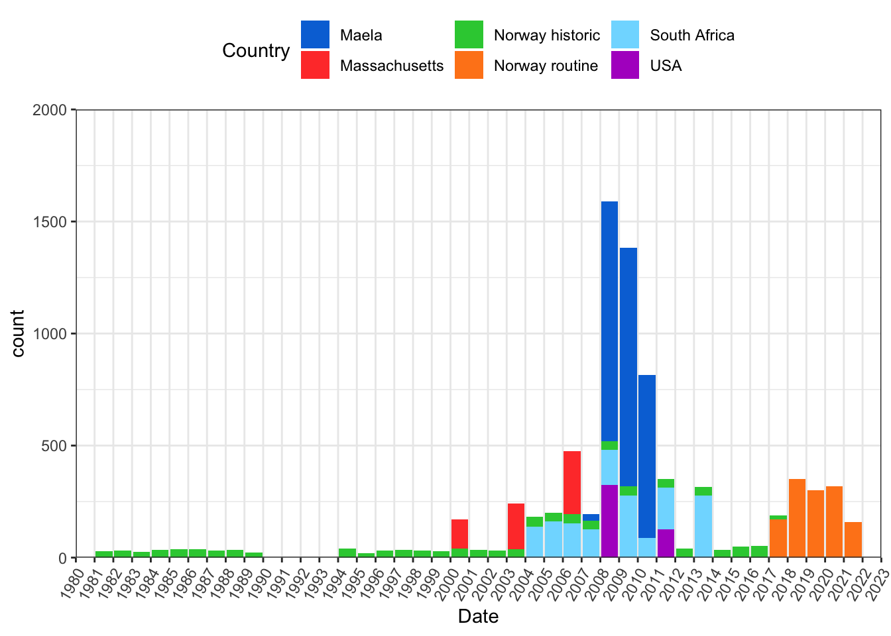

An overview of the data
Project summary
The goal of this project is to determine mutations and factors that are involved in penicillin resistance. We have collected a data set with isolates that are susceptible, intermediate resistant and resistant to Penicillin G. We included isolates that have been analysed in previous studies in addition to new isolates from routine sequencing in Norway. In addition, we sequenced historic isolates that have been stored at the Norwegian Institute of public health. In total the collection consists of 9316 genomes, with sampling dates and antibiotic resistance profiles summarized below.
Collection dates all countries
